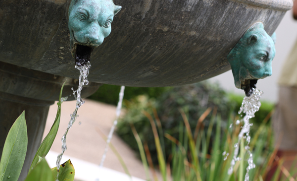

Sunny East Gand at the Getty Villa

It is hard to believe, but there are about 300 varieties of plants at
the East Garden at the Getty, making the experience truly remarkable.
This area is one of the most tranquil spaces at the Villa. As I wandered
around, enjoying shade provided by sycamore and laurel trees and serenaded
by splashing water from two sculptural fountains, I couldn't help but think
of ancient Rome and the role of the garden 20 centuries ago. It was a place of peace and …
Read more
The City Named After Queen Victoria

An hour and a half aboard a comfortable car ferry is all it takes
to transport you from the modern, urban space that is Greater Vancouver
to colonial Vancouver Island, seemingly stuck in the 18th century. The main
town of Victoria showcases all the picturesque gems the British Empire was so p
roud of at the height of its spanning expansion. Representative yet inviting
Victorian style municipal buildings, a protected harbor and cobblestone streets
populated with small shops and … Read More